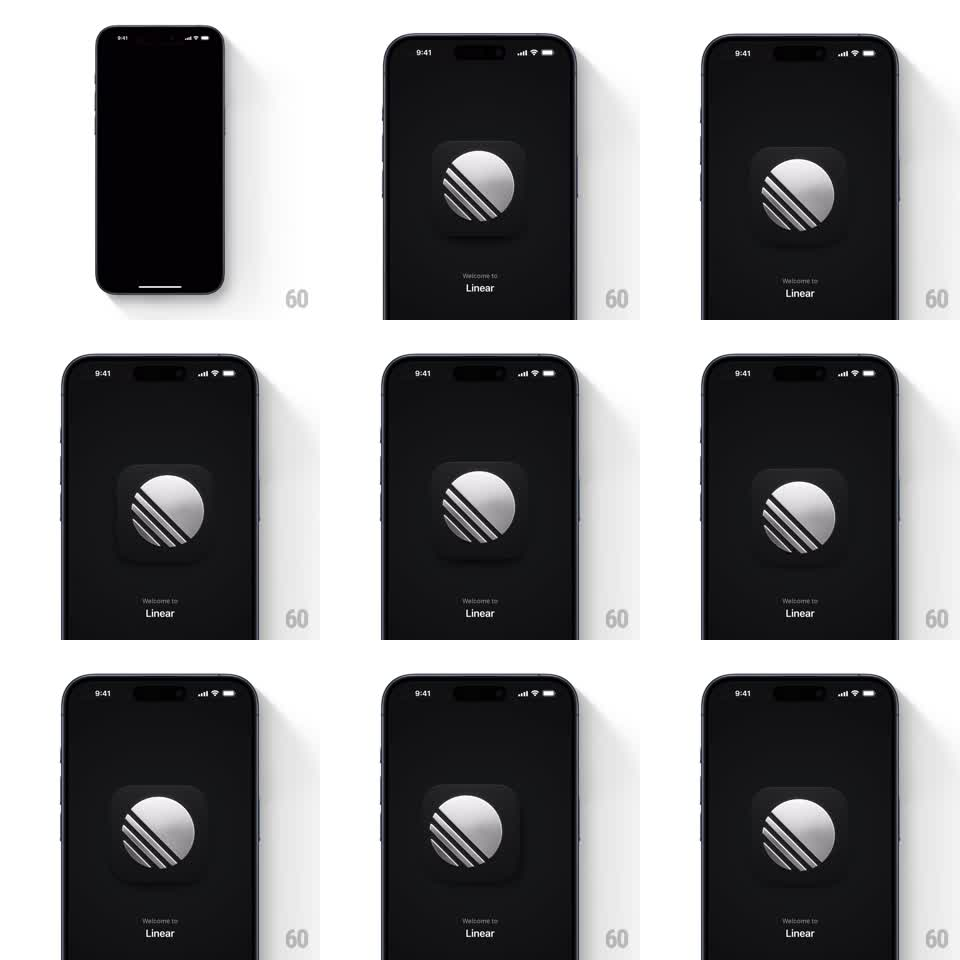

Media
Frame-by-frame

Rebuild this animation 1:1: Linear's splash screen - a metallic disc logo with diagonal stripes on black, its specular highlight and drop shadow shifting live with device tilt as if lit from a fixed light source.

Rebuild this animation 1:1: Linear's splash screen - a metallic disc logo with diagonal stripes on black, its specular highlight and drop shadow shifting live with device tilt as if lit from a fixed light source. ## Integration Integration: stack-agnostic spec - springs given as stiffness/damping, timed motions as duration + curve; map every value to your framework and animation library of choice. ## Scene Pure black screen: a rounded-square badge holding a silver disc with three diagonal dark stripes, "Welcome to Linear" small text below. Nothing else. ## Motion spec Pattern: gyroscope-driven light rig. - Entrance: badge fades + scales from 0.92 to 1 (~400ms, ease-out), text fades in 150ms later. - Gyroscope/tilt: the disc's highlight band (a soft specular gradient) slides across the metal opposite the tilt direction, and the badge's drop shadow offsets with the tilt (~max 12px) - mapping tilt angle linearly, low-pass filtered (~150ms smoothing) so motion is buttery, not jittery. - Stripes stay fixed to the disc; only light and shadow move. - Idle: a very slow ambient drift (~0.5px/s) keeps the metal alive when the device is still. ## Calibration - The illusion is a FIXED light: highlight moves opposite the surface normal, shadow moves with it. - Clamp shadow/highlight ranges so extreme tilt never detaches the shadow from the badge. ## Reduced motion Static highlight and shadow; entrance fade only. ## Don't miss - Black background, silver-on-silver material - the whole effect is lighting. - No text or logo motion beyond the entrance; the metal is the show.